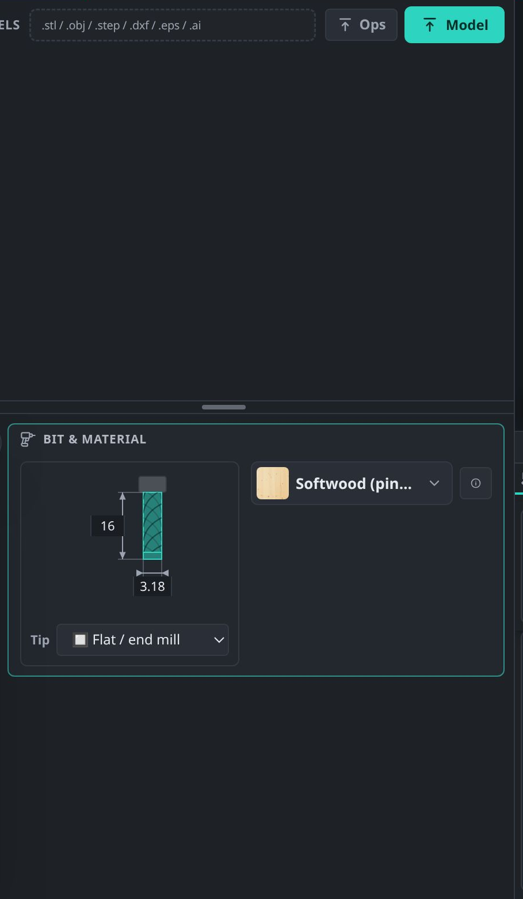
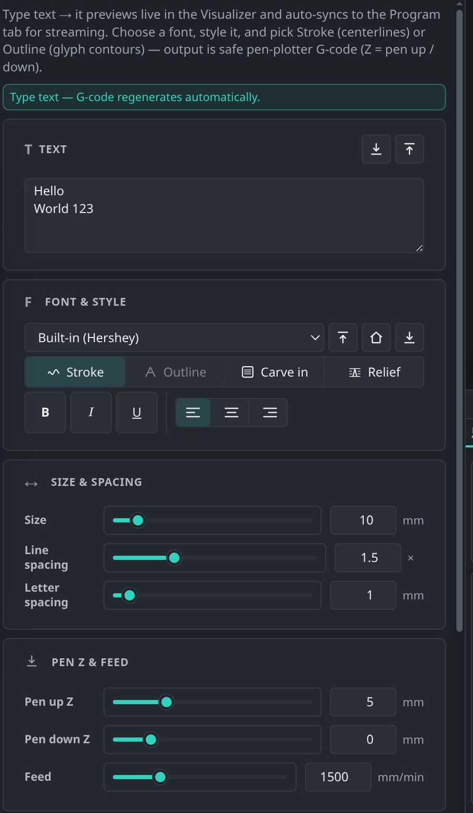
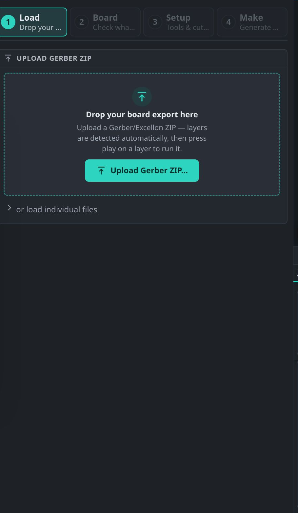
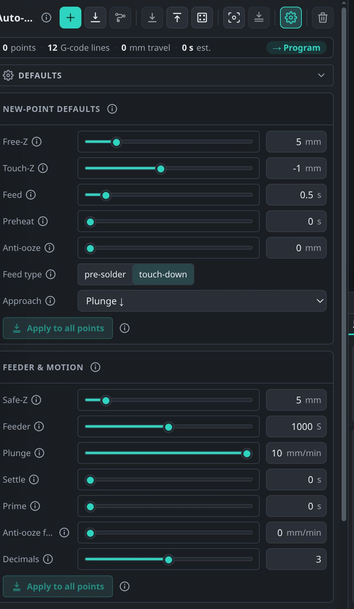
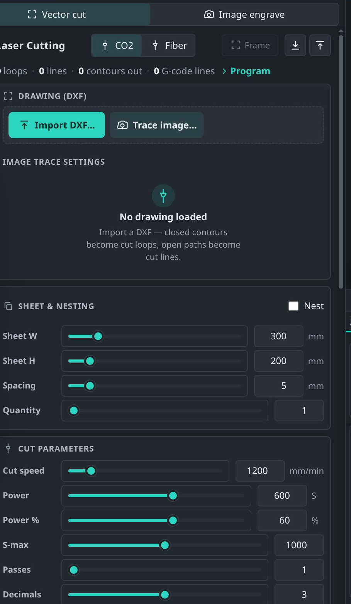
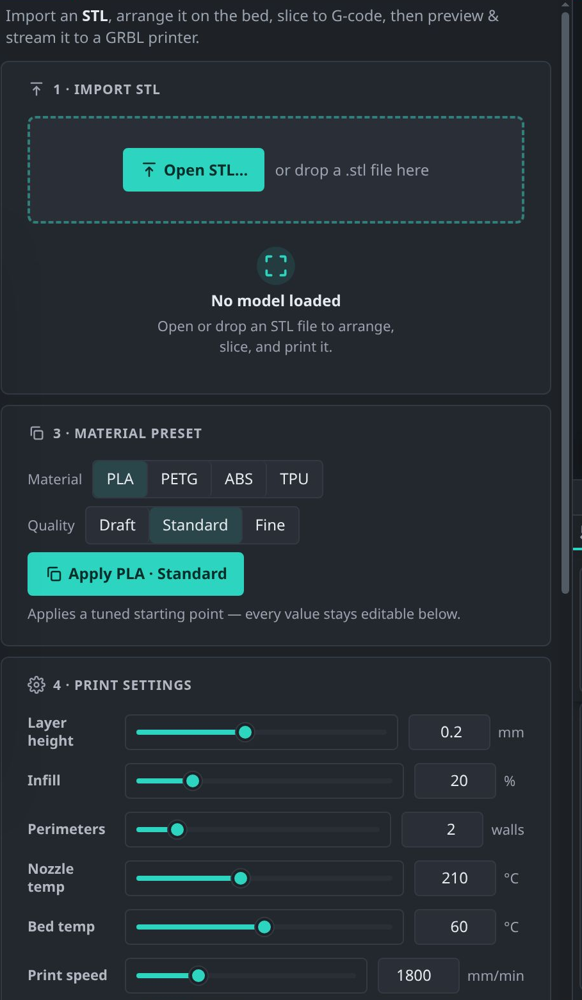
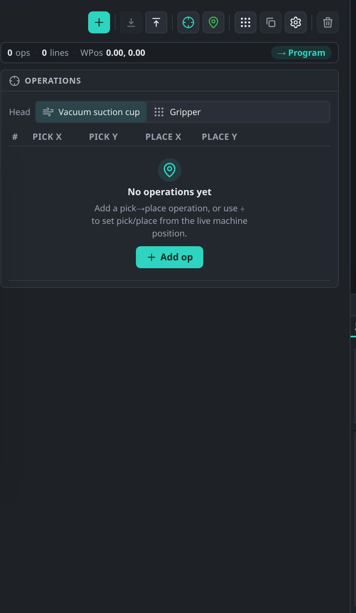
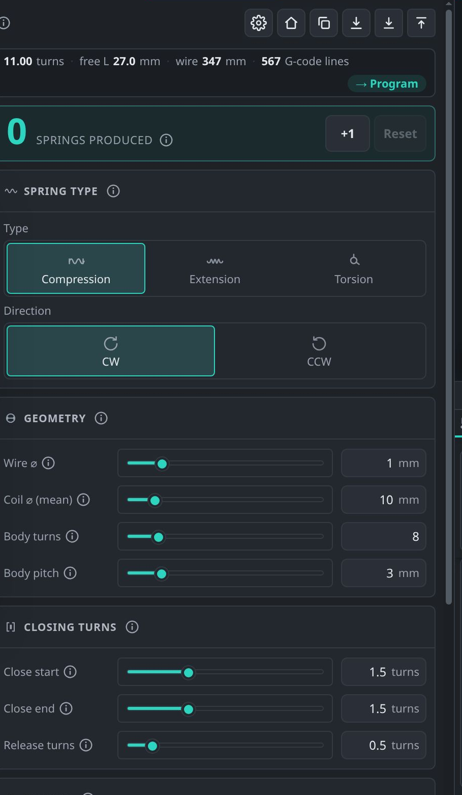
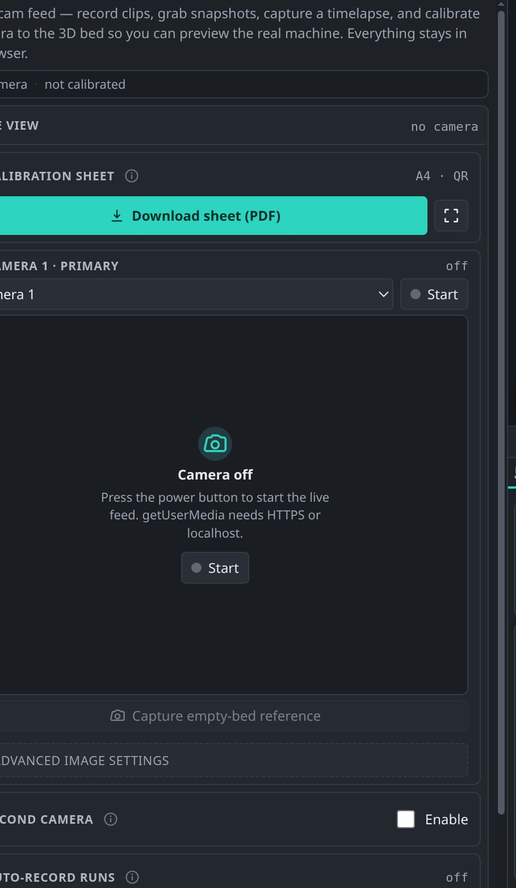

07 · Work modes
One tab per job
Every tab takes a design, asks for the few numbers that matter, and writes safe G-code into the shared Program panel. They all share the same rhythm: load → set tool & depths → Generate → check in 3D → run.

2D/3D Carving
The general-purpose CAM tab. DXF/SVG for 2D profiles and pockets; STL/STEP/OBJ for 3D relief carving. Bit & material presets set feeds for you.

Writing
Single-stroke engraving and pen-plotting text. Built-in Hershey font, or load a custom handwriting font made from your own writing.

PCB
Gerber + Excellon → isolation routing, drilling and board cut-out, via a guided wizard. In active development — not yet documented.

Soldering
Automatic selective soldering. Per-point travel and touch-down heights, feeder pulses and dwell times in an editable table.

Laser Cutting
Vector cut/engrave with power and pass control, plus raster from an image. Uses M3/M4 spindle-as-laser mode.

3D Printing
Slice an STL to layers with a live layer preview: temperatures, retraction, infill, perimeters and supports.
3D Print House
Construction-scale printing. Import a civil floor plan (SVG/DXF), set wall width and layer height, and it prints walls course by course with openings.

Pick & Place
Component placement from a centroid file, with feeder positions, nozzle actions and optional camera-assisted alignment.

Spring Coiling
Wire diameter, coil pitch and turns become a two-axis feed/rotate program, with a 3D coil preview.

Embroidery
Stitch paths from vector art. XY only — the needle is driven by the machine itself, so no Z is emitted.

Camera
A live overhead view of the bed with calibration, so you can align work optically and record a job.
…and 12 more
Screw Fitting · Bore/Drill/Hole · Glue Dispense · Signature · Welding · Spot Welding · Clothes Stitching · Tattoo/Henna · Visualizer · Program · Console · Controller. Full list overleaf.